Pubcookie ISAPI Filter - Install Guide
Note: Documentation can contain bugs too. The
online version of this document is always the most up-to-date version.
Included on this page:
This guide helps Microsoft Internet Information Server administrators
to install, configure and use the Pubcookie 3.3 ISAPI filter, herein referred to as,
simply, the filter.
The filter controls user authentication. When a resource is
protected with a Pubcookie authentication type, access to the resource is controlled by
the filter and users must be able to get through the authentication process before
IIS can serve the requested resource. The filter sets a HTTP_PUBCOOKIE_USER
server variable containing the user's id when authentication is successful.
The filter does not provide authorization; it's up to the resource/application to
decide what the authenticated user is privileged to do.
Significant changes in Pubcookie 3.3.5:
Added callbacks for OpenSSL to fix issues unbundling session cookies.
Problems with the previous 3.3.4 release were observed on some multi-processor systems running Windows Server 2003.
Once the problem was encountered, current session cookies couldn't be unbundled until IIS was reset.
The event log would contain the following messages:
libpbc_rd_safe: couldn't verify signature for example.org OpenSSL error: error:0606506D:digital envelope routines:EVP_DecryptFinal:wrong final block length
libpbc_unbundle_cookie: libpbc_rd_priv() failed
[Pubcookie_User] Can't unbundle Session cookie for URL /blah.asp; remote_host: xx.xx.xx.xx
Additional review of OpenSSL revealed it wants callbacks set up so it can do locking for the thread-sensitive operations.
The callbacks were added, tested, and load tested for this release.Upgraded supporting OpenSSL libraries to version 0.9.8o.
Significant changes in Pubcookie 3.3.4:
Fixed Stack Buffer Overflow in ISAPI Filter.
Applied security fix to address stack buffer overflow vulnerability described in
February 1, 2010 security advisory.
Fixed query string encoding bug in Meta-Refresh redirect. When enforcing https, the filter
re-encodes query string arguments prior to redirection, so that values aren't truncated.
Significant changes in Pubcookie 3.3.3:
Significant changes in Pubcookie 3.3.2c:
Significant changes in Pubcookie 3.3.2b:
Improved handling of odd characters in path and query strings.
The filter now matches the Apache module's handling of odd characters in
the requested uri's path and query; this fixes possible truncation of uri's
sent through the login process.
Verify non-empty userid. Modified the ISAPI filter to disallow
empty userids in the granting reply unless the No_Prompt setting is on.
Significant changes in Pubcookie 3.3.1:
Fixed duplicate HTTP header values. Replaced AddHeader() with SetHeader() in the ISAPI filter
to eliminate duplicate HTTP Header values.
Modified session reauthenticaiton messaging. The filter now verifies that the login cgi handled a
reauthentication request when session reauthentication is configured. (Requires 3.3.1 or higher login server.)
Significant changes in Pubcookie 3.3.0a:
Changed redirection method. Modified extension to use HTTP 302 redirects instead
of meta-refresh on redirect back to the resource. Also updated the handling of output values
when printing redirect pages.
Dumpvars.asp removed. The dumpvars.asp file was removed from the sample web application.
Significant changes in version 3.3.0:
-
Added AES encryption support. AES is now the default encryption algorithm requested by and
used by the filter to encrypt and decrypt private data. To interoperate with earlier versions of the
login server, use the IIS Manager to set the new Encryption Method directive to DES for your web
site.
-
Removed pre-session cookie countermeasure. Unneeded complexity and, as it turns out, an
unnecessary countermeasure when messages are communicated using HTTP POST message bodies as they've
been since the 3.2 release.
-
Fixed AppID display in MMC snap-in. The Pubcookie Directives tab displays the correct default,
inherited, or explicitly applied AppId setting that is being used by the ISAPI filter itself.
-
Removed Enterprise_Domain directive from MMC extension. Obsolete since the 3.2 release.
Significant changes in version 3.2:
-
PubcookieFilter DLL now acts as an ISAPI extension
as well as an ISAPI filter. As before, the filter manages access to
resources and initiates authentication. The extension has been added to
consume replies from the login server. Together, they implement the
POST-based login method introduced in the Pubcookie 3.2.0 Apache module.
This change effectively replaces the classic enterprise-cookie-based method
used in the past. As a result, Enterprise_Domain has been removed from the
installer, and the relay cgi has been removed altogether.
-
Updated Windows Installer package (Pubcookie.msi). Site Information
screen now provides 3 keyclient options: obtain new key, retrieve old key,
or don't run keyclient at all. Also, the installer now continues after
keyclient errors rather than rolling back; this allows you to troubleshoot
and then re-run the keyclient manually to obtain granting certificate and
encryption key.
-
Enhanced Keyclient.exe. When run manually, it offers a certificate picker to
choose among multiple valid certificates.
-
Fixed problems reading registry settings. The filter is more consistent about
reading and applying default configuration, as well as configuration defined through
alternate WebVarLocations. The related bugs in version 3.1.1 have been fixed.
-
Updated Cache-control headers. The Pubcookie filter matches the Apache module's
headers for redirections to the login server.
-
Favicon location exempted. Fixes problems with some browsers, especially
Firefox, when the favicon is protected.
-
Updated OpenSSL 0.9.7.f libraries.
-
Other bug fixes and improved memory management.
Here are some compatibility notes for version 3.3:
- Compatibility note on version 3.3 encryption options:
- The version 3.3 filter supports different encryption algorithms. AES encryption is the default. However, earlier
versions of the login server only support one algorithm, DES, so you will have to determine the version of your
login server and set the Encryption Method directive accordingly. It may make the most sense to do this at the
web site level.
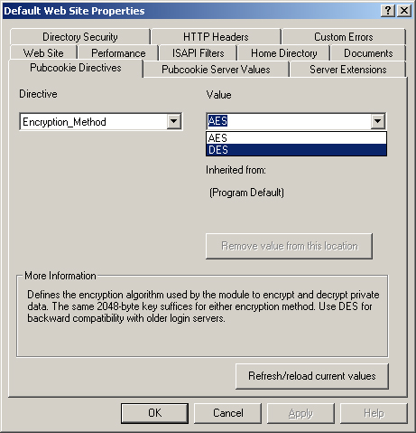
- Upgrading from version 3.0/3.1/3.2 to 3.3:
- Servers being upgraded from version 3.0/3.1/3.2 to version 3.3 should be aware that version 3.3 expects and uses
AES encryption by default. If your login server is version 3.3 or higher there is no concern; it supports
authentication requests that ask for AES encrypted replies. However, to interoperate with earlier versions of the
login server, you must set the Encryption Method directive to use DES encryption for your web site. This will ensure
that your upgraded filter continues to use DES encryption.
If your login server is version 3.3 higher and therefore allows you to use AES encryption, you should note that
session cookies encrypted with DES cannot be unencrypted with AES. As a result, session cookies obtained by users
prior to upgrading the module will be invalid after the upgrade. This means some users will be redirected through
the login server to establish a new session.
Clustered hosts should be upgraded with special care to keep all cluster members using the same encryption
method.
Note: You do not have to request a new encryption key to use version 3.3. Your current host key works equally
well for AES and DES encryption.
- Upgrading from version 2.7 to 3.3:
- Servers being upgraded from earlier versions of the filter (classic versions, such as version 2.7) may require
configuration changes. Extra care should be given to reviewing that authentication is working as expected after the
upgrade. Also review the sections on multiple web site configuration and clustered host configuration if they apply to your environment.
Servers being upgraded from earlier versions should also be aware of the switch to AES encryption noted in the
compatibility notes above.
Also recall that version 2.7 requires an encryption key specific to your primary IP address. If you want to be
able to rollback to version 2.7 more easily, you should keep your current key intact on your server as well as on
your site's Pubcookie login server. To do so, select the option to retrieve your old key when working through the
installer; otherwise it will obtain a new key from the keyserver, one that isn't compatible with version 2.7.
The filter relies on additional infrastructure at your site. Here are some
general prerequisites that, if fulfilled, will lead to a smooth, successful
installation.
-
Define a Default Web site for IIS Instance ID 1 and verify that it is running.
The installer requires that IIS instance ID 1 is defined and running. (Yes, this
can be an onerous prerequisite, which we intend to change in a future release.)
Also, on IIS 6.0, verify that the Default application pool is running.
-
Determine the location of your site's Pubcookie login server. The installer
needs this URL during installation. You may also want to find out its version,
so that you know what features it supports.
-
Determine the location of your site's Pubcookie keyserver. The installer needs
this URL to download your site's Pubcookie "granting" certificate and to request
a symmetric encryption key that your server will share with
your login server. Depending on the keyserver version and site policy, you may
also need to ask your administrator to "permit" your server to request keys.
-
Determine how trust is handled by your site's Pubcookie keyserver. You'll need
to know which Certificate Authorities the keyserver trusts to verify
certificates. Similarly, you'll need to know which Certificate Authority can
verify the keyserver's certificate. Ask your administrator for guidelines;
it'll save you time and effort.
Note: Review the sections on multiple web site configuration or
clustered host configuration now if either of those scenarios apply.
The information will help you think about and tailor the installation as
needed.
The Pubcookie ISAPI filter has the following system requirements:
-
Microsoft Windows 2000 or later
-
Microsoft Internet Information Server (IIS) 4.0 or later
-
Accurate system time
-
Domain name registered in DNS (e.g. appserver.example.edu).
-
An SSL enabled web site. All intended users should be able to reach your website
via HTTPS at your registered DNS name without errors.
-
The System32\inetsrv folder should be world writable or writable by the
administrator account running the installer.
-
After installation, the IUSR account must be able to read and execute
System32\inetsrv\Pubcookie\PubCookieFilter.dll.
This section describes how to install Pubcookie using the provided Windows Installer package
(Pubcookie.msi). We'll cover a fairly typical installation and note significant exceptions and more
advanced uses when possible.
-
Log in as Administrator or as an account with administrator privileges.
The installer needs to be able to create folders and files in System32\inetsrv,
to stop and start system services, to modify the Windows registry, and to read private keys in
the Windows certificate store.
Note: The installer can be run from the command prompt, or from within a batch file,
with pre-defined site information. See the msiexec options section
for details.
-
Run the Pubcookie.msi installer. Click Next on the initial Welcome screen.
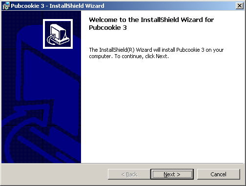
Note: If the installer says, mysteriously, "The wizard was interrupted before Pubcookie3 could
be completely installed", click Finish and run it again. (See Installer errors in the
Known Problems section below.)
-
Pubcookie is licensed under the Apache License, Version 2.0.
If you accept the terms of the license, select the appropriate radio button and click Next.
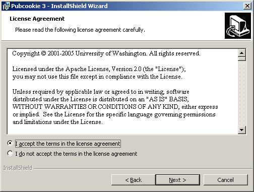
-
The Site Information screen lets you enter your server name, login server and
keyserver locations, authentication flavors, and lets you select your desired
keyclient behavior. Enter your Site Information and click Next.
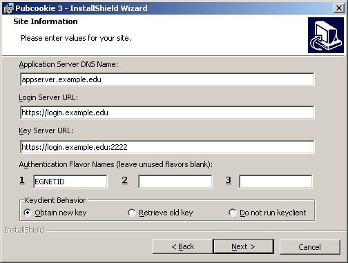
Note: Your server name should match the Common Name of your site's SSL certificate.
-
The Custom Setup screen lets you choose what to install and where to install it.
By default, the filter and sample web application are selected, with fairly
standard installation locations. Adjust as needed and click Next.
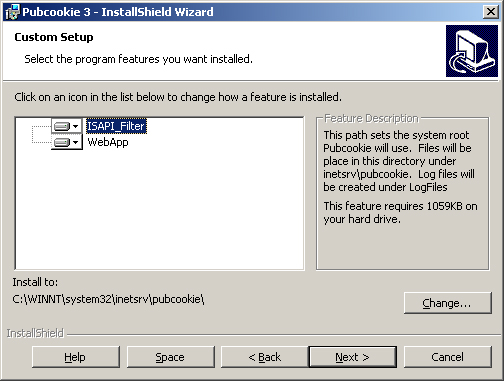
-
The Ready screen indicates the installer is ready. Read through the steps below
to learn what it's going to do. It will display a Status bar, and provide a Cancel
button which is fairly good at rolling things back out, but this is the stage where
installation really begins. When you're ready to proceed, click the Install button.
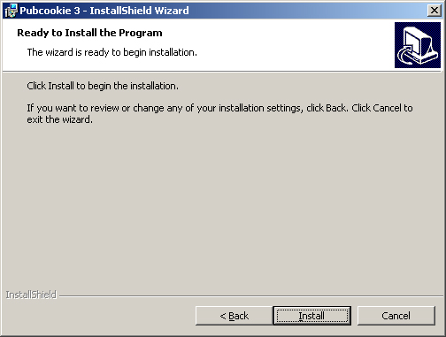
-
Installation begins by adding Pubcookie to the Root Filter list in the IIS Metabase.
If you instead want to add Pubcookie to specific web sites, use the Internet Information
Services (IIS) Manager to do so after installation. (Hereafter referred to as the
IIS Manager, you can find it at Start > Programs > Administrative Tools.)
Installation also adds your Site Information to the Windows registry
as your initial Pubcookie configuration settings and installs a MMC snap-in
that adds Pubcookie configuration tabs to Properties dialogs within
the IIS Manager.
Note: See Installer errors in the Known Problems section
below if the installer is interrupted during installation.
-
Next, your IIS Service will be stopped.
-
The installer will now run the keyclient according to the behavior you
selected on the Site Information screen. The default behavior is to request your site's
granting certificate and generate a new key, both of which are saved to a new
System32\inetsrv\Pubcookie\keys\ folder. Click OK on the corresponding
pop-up messages from the keyclient.
Note: The keyclient must find a certicate and private key in your
Personal certificate store that matches the server name entered in the Site
Information screen. It uses this key pair to negotiate a secure SSL/TLS authenticated
connection to your keyserver. This connection depends not only on your certificate
and the Certificate Authority that issued your certificate,
but also on the Certificate Authority that issued your keyserver's certificate.
Note: If the keyclient fails, you'll need to re-run it after the installer finishes.
-
Next, your IIS Service will be started.
[fixme: do we mention here that the filter is initialized and a new session key pair
is generated?]
-
When the installer has completed, click Finish.
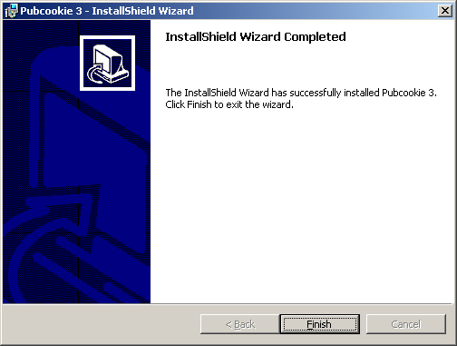
Installation on IIS 6.0 requires additional configuration to add and allow
a new Web Service Extension for Pubcookie.
-
Using the IIS Manager, select Web Service Extensions and click
"Add a new Web service extension..."
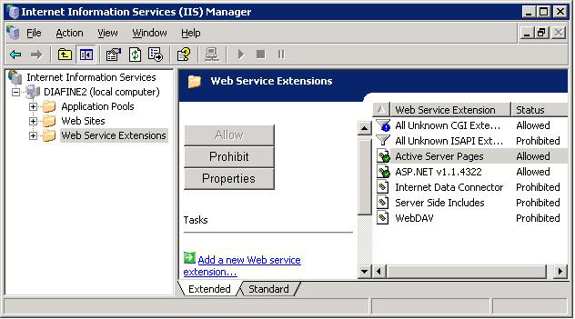
-
On the New Web Service Extension dialog, enter .pubcookie3 for the Extension name,
click Add..., click Browse and browse to and then Open the System32\inetsrv\pubcookie\PubCookieFilter.dll,
click OK, then check the box to Set extension status to Allowed, and click OK.
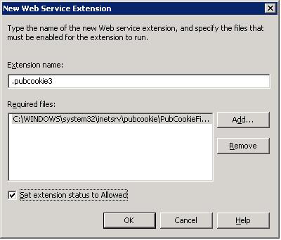
-
The resulting Web Service Extension for Pubcookie will be added to the list.
The Status should be Allowed.

A successful installation of Pubcookie includes the following items:
-
ISAPI filter. See IIS Master Properties > Edit > ISAPI Filters. Status
should be up/green; priority should be Low.
-
ISAPI extension. See IIS Master Properties > Edit > Home Directory >
Configuration... > Application Mappings. A .pubcookie3 Extension
should be present with an Executable Path pointing to the PubcookieFilter DLL.
-
Pubcookie MMC snap-in configuration tabs. See Pubcookie Server Variables and/or Pubcookie
Directives tabs added to Properties dialogs opened in the IIS Manager.
-
Pubcookie folder. This folder contains the keyclient, DLL files, license, and keys folder.
See System32\inetsrv\Pubcookie.
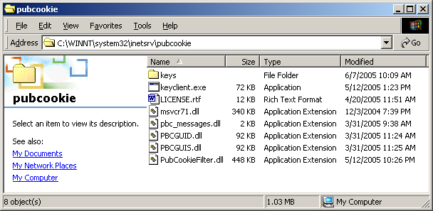
-
Pubcookie keys folder. This folder contains your host key(s), granting certificate,
and a session key pair if you've created one on disk. See System32\inetsrv\Pubcookie\keys.
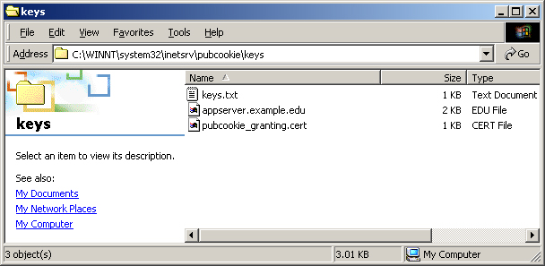
-
PubcookieFilter Windows registry key. The primary registry key for Pubcookie is
System\CurrentControlSet\Services\PubcookieFilter.
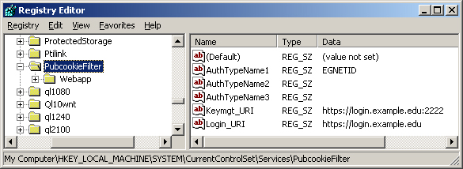
-
Event log sources. The installer registers several event log sources for Pubcookie.
See the main Pubcookie key, plus one for each IIS Instance ID, under
System\CurrentControlSet\Services\EventLog\Application.
-
Sample Web application. A sample web application demonstrates how authentication
information is provided by the filter. See wwwroot\webapp.
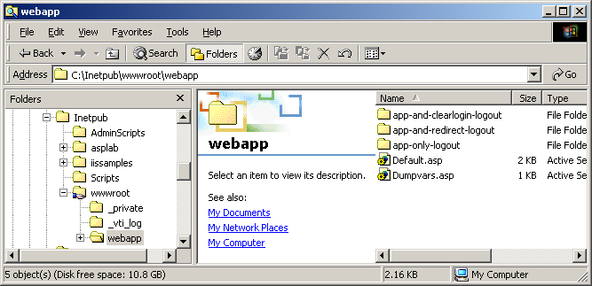
-
Windows Installer package (Pubcookie.msi).
[fixme: why would one want to keep the installer around? perhaps for re-installs, uninstalls?]
Pubcookie derives its behavior from configuration settings in the Windows registry.
Use the IIS Manager to view and manage these settings. They fall into two categories,
Pubcookie Server Values and Pubcookie Directives.
Pubcookie Server Values apply configuration behaviors to Pubcookie itself.
They can be found under your master or web site properties. Click the Pubcookie
Server Values tab.
Pubcookie Directives apply configuration behaviors to specific resources: web sites,
folders, even individual files. They can be found under the resource properties.
Click the Pubcookie Directives tab.
Use the IIS Manager to apply Pubcookie authentication to a resource. For example,
if you installed the sample web application, follow these steps to view and modify
how its configured for authentication:
-
Browse to the Webapp in the IIS Manager and open its Properties.
-
Select the Pubcookie Directives tab and choose the AuthType
directive from the drop-down menu.
-
To enable authentication, select the appropriate value. To disable authentication, select None.
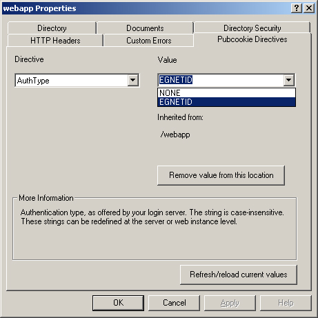
Note: AuthType values are determined by the Authentication Flavor
Names entered during installation. They
correspond with the types (or, technically, flavors) of authentication provided
by your Pubcookie login server. Typically, just one flavor is
supported, but some sites have two or more. The menu values are stored as
Pubcookie Server Values.
-
When you click Apply (or click OK, after making more than one change within the
Properties dialog), your configuration choices will be written to the appropriate
registry key.

-
The filter reads the AuthType value on every request, so configuration changes
should be reflected immediately.
The Pubcookie keyclient for Windows (System32\inetsrv\pubcookie\keyclient.exe)
is used to securely obtain symmetric encryption keys for your server name(s). It uses the
SSPI/SChannel libraries to negotiate a SSL/TLS authenticated connection to the
keyserver, using credentials and trusted certificate authority (CA) information
from the Windows certificate store. Most likely it will use the same Server (SSL)
Certificate used by IIS for secure HTTPS communications.
The keyclient supports the following command-line options:
-
-H <hostname> (Client hostname. Used to search certificate store
for a certificate with a matching SubjectAltName or Subject/CN.)
-
-K <location> (Key Server URL; defaults to Keymgt_URI registry setting.)
-
-d (Download current key; without this option it will obtain a new key.)
-
-G (Obtain your site's Pubcookie granting certificate.)
-
-I (Run in simplified installer mode. )
For example, to request a host key for appserver.exampled.edu from
login.example.edu, you would use the -H and -K options.
> cd C:\WINNT\system32\inetsrv\pubcookie
> keyclient.exe -H appserver.example.edu -K https://login.example.edu:2222
Note: The keyclient skips over expired certificates in its search for one
that matches the specified (-H) hostname.
Note: When run from the command prompt, the keyclient will allow you to
pick which certificate to use if it finds more than one that matches.
If the same server name is hosted on several machines, you have a clustered host configuration
and will need to synchronize your installation and configuration among the cluster members. In
particular, you need to make sure each member has a copy of the same host key and is using
the same Pubcookie session key pair.
-
To synchronize the host key, when you run the installer on the first host, set
the installer's keyclient behavior to obtain a new key. On subsequent hosts, set it to
retrieve the old key. Another method is to obtain a new host key on the very last host and then
copy it to the previous hosts.
-
To ensure each cluster member has the same session key pair, put the same
key pair on each host, on disk, in the right location, and the filter will read it
upon startup. The file names are
System32\inetsrv\Pubcookie\keys\pubcookie_session.cert and
System32\inetsrv\Pubcookie\keys\pubcookie_session.key, respectively.
Note: any appropriately named key pair in PEM format will suffice for the session key pair.
The difficulty on Windows is generating a key pair. If you can find a system
that has OpenSSL, you can generate a new key pair with:
$ openssl req -new -x509 -out pubcookie_session.cert \
-newkey rsa:1024 -nodes -keyout pubcookie_session.key
[fixme: there must be an easier way using Windows crypto API commands.]
-
As a result of this effort, each host will have the same contents in its Pubcookie keys folder.
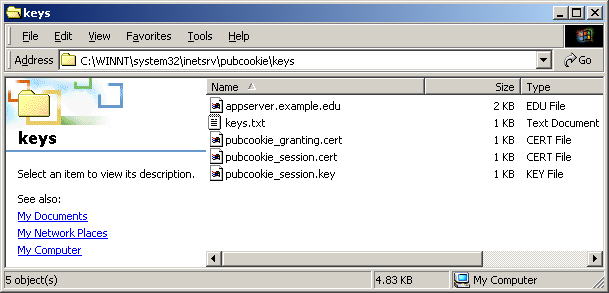
Note: If you don't sychronize clustered hosts, session cookies set by one cluster member will not be
readable by the other cluster members, resulting in Can't unbundle session cookie error
messages in the Event log.
If a machine hosts multiple web sites (server names), additional configuration may
be required.
-
(Required) Since each web site represents a differnet server name, each
web site must obtain a host key from the keyserver. Install Pubcookie
for one site. Then run the keyclient again (using
the -H hostname option) for each additional web site. Reset IIS
when you're done.
-
(Recommended) By default the filter reads all configuration settings
starting from the main PubcookieFilter registry key. If two different web sites
have different configuration objectives, then you may run into conflicts.
For example, one site might have authentication enabled at the root level,
while a second site might enable it only for a subfolder. You can't
do both, since the AuthType settings will conflict. Therefore, you should
separate configuration such that each web site has its own location for
configuration settings:
-
Using the IIS Manager, open the Properties for each web site.
-
Select the Pubcookie Server Values tab and choose the WebVarLocation variable
from the drop-down menu.
-
Enter a new registry location for the WebVarLocation. You might base the name on the web site (e.g.
System\CurrentControlSet\Services\PubcookieFilter\DefaultWebSite).
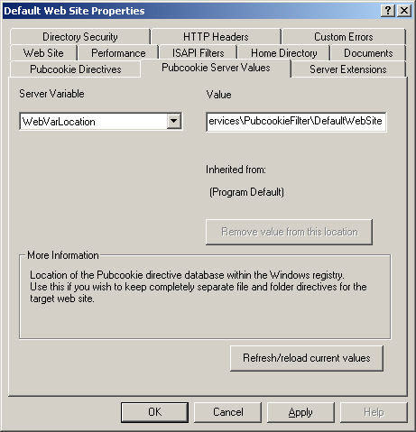
-
Notice that your web site's IIS Instance ID maps to the WebVarLocation. You can see
this in the Window registry.
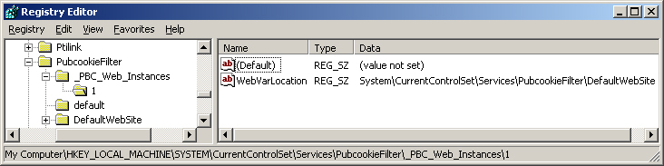
-
Once a WebVarLocation has been defined for a site, all new configuration changes
will be represented under the new registry location.
The Windows Installer package for Pubcookie supports several command-line options
that can be used with the msiexec command.
-
LOGINURI (Login Server URL)
-
KEYMGTURI (Key Server URL)
-
AUTHID1-3 (Authentication Flavor Names; Use "" for unused flavors.)
-
RUNKEYCLIENT (Keyclient Behavior. 0=Do not run keyclient; 1=Obtain new key (default); 2=Retrieve old key)
For example, you might run it at the command prompt, first changing folders to wherever
you saved Pubcookie.msi.
> cd C:\WINNT\system32\inetsrv\pubcookie
> msiexec /i pubcookie.msi \
LOGINURI=https://login.example.edu \
KEYMGTURI=https://login.example.edu:2222 \
AUTHID1=EGNETID AUTHID2="" AUTHID3="" \
RUNKEYCLIENT=1
[fixme: This is draft text. We need more real-world experience to confirm that
this section is accurate.]
The Windows installer package requires you to uninstall previous versions prior
to installing a newer version.
-
Run the installer for the version of Pubcookie currently installed on your
system, e.g. if you're using version 3.1.1 run the Pubcookie 3.1.1 installer.
-
Choose the Remove option from the Program Maintenance screen, click Next, and
click Remove. This will uninstall the current version while perserving your
current Pubcookie keys folder and your current configuration settings for alternate
WebVarLocations and web resources (i.e. web instances, folders and files).
Note: uninstalling Pubcookie removes the root level configuration settings for the
filter (i.e. Pubcookie Server Variables). These settings will be added back, based
on the Site Information you provide, when you install the newer version.
-
Once you have uninstalled the current version of Pubcookie, run the new installer.
It will install Pubcookie as if from scratch, perserving your current Pubcookie keys
folder and configuration settings.
Note: Enter the same Authentication Flavor Names to ensure that current AuthType
configurations work the same as before. If you change your Authentication Flavor
Names, resources that currently require authentication may not be protected
anymore.
Note: The safest keyclient behavior to choose during an upgrade is to not run the keyclient.
This leaves your keys folder unchanged. Retrieving the existing key is a safe choice too.
Note: The installer will remove old versions of the filter from
the IIS metabase, but this generally isn't as effective as uninstalling things first.
[fixme: TBD. need to document effects to each installed item.]
Known problems with the Windows components in Pubcookie 3.3:
-
Windows Installer errors. Pubcookie.msi is a rudimentary Windows installer package, so
you might run into some quirks. It isn't understood why it sometimes doesn't proceed beyond the
Welcome screen and says "The wizard was interrupted before Pubcookie3 could be completely
installed." Be persistent here. Re-running the installer often enables it to proceed. (If
you understand why, let us know.) The installer can also fail due to other reasons. If a web site
is not defined and running for IIS Instance ID 1 (often the Default Web site) it will say:
"Could not find a web site. Make sure that a web site has been defined in the Computer
Management MMC snap-in." In IIS 6.0, if the Default application pool isn't started, the
installer might say "The wizard was interrupted before Pubcookie 3 could be completely
installed..." and roll back the installation.
-
Memory leaks. Memory leaks have been observed on systems using the filter, causing the
inetinfo.exe (IIS 5) and w3wp.exe (IIS 6) processes to grow over time. This can be addressed on
heavily loaded systems by recycling sites or resetting IIS nightly, in which case it is
recommended that you store your Pubcookie session key pair on disk (see clustered host configuration) to preserve sessions between restarts.
-
IIS 6.0 Idle Timeout causes session errors. Uncheck idle timeouts to prevent session errors.
The default inactivity timeout in IIS 6 is 20 minutes for each web application pool (see Properties >
Performance > Idle timeout). When this times out, it's like resetting IIS, which causes the filter
to reinitialize and generate a new session key (if you don't have one on disk). The new session key can't
be used to read old session cookies, so users who establish a session before the
timeout/reinitialization receive error messages. They manifest themselves as Can't unbundle session
cookie messages in the Event Log.
-
New Event Log sources not added for new Web Sites. If a new Web Site is added after Pubcookie has
been installed, a new Event Log source may need to be registered manually.
-
MMC adds empty registry keys. The MMC extension adds empty, harmless, but nevertheless
extraneous registry keys when you open the Pubcookie Directives tab.
-
MMC can't set inherited settings. The MMC extension won't allow you to override inherited values with
the same value that's being inherited.
-
Windows Event Viewer crashes. Past versions of the pbc_messages DLL are known to crash the Event Viewer
on some systems when viewing Pubcookie events. This should be fixed in version 3.3, so please report it if it still happens.
-
Requests to root level resources require a trailing slash. Requests to folders and virtual
directories at the root level of a site require a trailing slash. Without it, the filter uses
the default configuration and doesn't pick up the settings specific to the folder or virtual
directory. Until this is fixed in the filter, links and requests should always include the trailing slash.
(But that's good form anyway.)
-
Filter works okay, but status not updating. With IIS 6, the "Network Service" account needs read
permission to the Pubcookie folder to update the ISAPI filter status (to status up/green). This is the account the
filter runs under as per the DefaultAppPool Identity setting.
The Windows certificate store holds the SSL key pairs used by IIS and the
Pubcookie keyclient. You can use the MMC Certificate snap-in to view and manage
these certificates.
-
Open the MMC console by clicking Start > Run
-
Type mmc and click OK.
-
On the Console menu, click Add/Remove Snap-in.
-
Click Add > Certificates. You'll be asked to select from the
current user account, service account, or the computer account.
-
Choose the Computer account, which is where the relevant certificates
are stored.
-
Click Local computer, and then click OK.
-
Use the MMC to review the certicates in the Personal container.
Remove any certificates that do not belong.
Copyright 1999-2007, University of Washington. All rights reserved.
See doc/LICENSE.txt for terms of use.